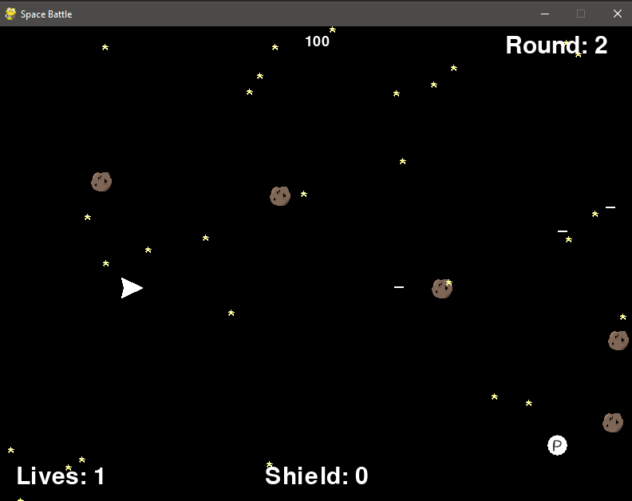

Matthew Robinson
About Me
Hello there! Welcome to my portfolio website! My name is Matthew Robinson and I am a programmer! I graduated from the University
of Western Ontario with a Bachelor of Science in Computer Science. I have always had a love for puzzles and in coding I have the opportunity to solve countless puzzles!
I've spent my entire life playing video games. As I learned more about programming I discovered that I would pause while playing to try and understand how the
code in the game would be written in order for it to work. I have experience with several programming languages from school, however, I have the most experience with
Object Oriented languages such as Java and Python.
On the non-technical side I am eager to learn new things and expand on my current abilities.
I can work collaboratively with others to achieve company standards and I am very motivated to get work done properly.
I am passionate about helping to create products that will assist people in their day-to-day lives.
It is my hope that from this website you will be able to determine who I am in both a professional and personal sense.
In the following sections you will see my work history, coding projects, skill set, and hobbies.
I am very excited to begin my journey into a professional life of software development. Please let me know if you think I'm a good candidate.
I hope you like what you see and I look forward to discussing any potential positions.
Work History
Warehouse Assistant - Forest Agri Services
September 30th 2021 - present:
I alternate between the Forest, Ontario and Watford, Ontario locations with differing tasks depending on the location.
At both locations I am tasked with customer service as well as stocking inventory and general maintenance.
At the Watford location I handle animal feed and hydrogen peroxide tracking as well as monthly inspections and
moisture tests on crop harvest samples.
Central Poll Supervisor (CPA) - Elections Canada
September 2021 (2021 federal election day and training days)
Along with 2 other CPAs, I managed four polling stations in Bothwell, Ontario.
I supervised nine election officers, filling in for their positions when required.
We ensured an easy and efficient voting process for all eligible voters.
Private (Recruit) - Canadian Armed Forces
March 18, 2020 - December 30, 2020:
I attended Basic training at Garnison Saint-Jean-sur-Richelieu before voluntarily releasing
and being honourably discharged.
Dishwasher - Skeeter Barlows Bar and Grill
2012 - 2014 (George Stathis)
2018 (Fred Kako)
My job included washing dishes, preparing food for line cooks,
checking/maintaining inventory, cleaning the kitchen, and on occasion,
closing the restaurant at the end of the night.
Fair Board Director - Forest Fall Fair
Every third weekend of September 2010 - 2021:
I assisted with the set up and take down of the Forest Fall Fair and help make sure that all visitors have
a safe and fun weekend. Additionally, on the saturday night I assist with security for the nighttime event
Midnight Madness.
Website
Projects
Space Pygame Project

Link
This is a space shooter game I built in Pygame. You shoot and dodge asteroids and enemy ships as you make your way
through increasinlgy more difficult levels until you reach a boss level.
Java Calculator
Link
This is a calculator i made in Java. It has both standard and scientific UI as well as an executable file.
Student Directory Project
Link
This was a group project for a software engineering class. Through terminal the user can login as
either a admin, teacher, or student and access or change student info, course info, or teacher info, depending on access level.
In addition to these I have some minor projects and course assignmenst on my Github page: https://github.com/matthewrobinson4123
My Hobbies
I am an avid fan of board games of all kinds. My all time favourite board game is Axis and Allies: WW1 1914.
From my love for board games I have developed a strong sense of strategy. In my collection I have 38 board games, not including expansion sets. My collection includes
a wide variety of games differing in length and complexity. Some even offer the ability to play solo. My longest game is Twilight Imperium.
With maximum player count it can last upwards of 16 hours.
In addition to board games, I love video games. I have played video games my entire life, from NES to Xbox One. My preferred gaming platform is PC.
I play on a custom built gaming desktop with dual monitors. Through gaming I continue to develop a mind for strategy as well as resource management and teamwork.
When I discovered coding and my love for it I found that when I play video games I perceive it how a coder would, thinking about how to code is written, about objects
interacting with one another and about efficiency within the applications.
One of my more expensive hobbies is buying and painting Warhammer miniatures. I started this hobby in 2014 and have painted on and off since then. I have a skaven
(ratmen) and high elf army and I am currently working away at painting a dwarf army. My love of Warhammer and continual practice painting has helped me to develop a
keen eye for detail.
Fishing has always been a big part of my life. Having a cottage in Northern Ontario has allowed me to enjoy nature and all its beauty. Both my father
and maternal grandfather taught me how to fish and how to appreciate both the sport and the impact on nature. If you've ever been fishing, especially with
a hook and worm you know it takes great amounts of patience. I think this learned patience translates into my personal and professional life as well, knowing
the desired end result and understanding that it may not be acheived.